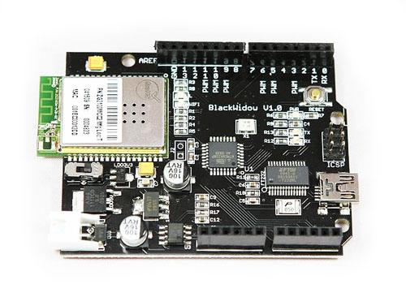

The BlackWidow is an Arduino Duemilanove compatible clone that has 802.11b wireless connectivity baked directly onto the board. The components have been switched out for surface mount equivalents to free up space for the wireless module. It is fully compatible with the Processing/Wiring IDE. The BlackWidow will give your Arduino projects added wireless connectivity without the need for additional bulky shields!
Model:ARD125A2P

It is the schematic, the circuit about Eagle resource like .pdf should linked here in order to avoid memory exhausted.
May include key specification and other specifications.
The image is come from async_labs wiki:
http://asynclabs.com/wiki/images/5/5a/BlackWidow.JPG
For WiFi usage, a minimum of 5 digital pins are required: 4 for SPI and 1 for interrupt. The interrupt is switchable between digital pin 8 and digital pin 2. The SPI bus can be shared with other SPI devices, but the CS pin cannot be modified from pin 10. Your other SPI device must have a switchable SPI CS pin, or a hardware modification needs to be performed.
Includes important code snippet.
The projects and application examples.
All the components used to produce the product.
Please list your questions here:
If you have questions or other better design ideas, you can go to our forum or wish to discuss.
| Revision | Descriptions | Release Date |
|---|---|---|
| V1.0 | Initial public release | Dec 27, 2010 |
Bug Tracker is the place you can publish any bugs you think you might have found during use. Please write down what you have to say, your answers will help us improve our products.
The Additional Idea is the place to write your project ideas about this product, or other usages you've found. Or you can write them on Projects page.
Click here to buy : http://www.seeedstudio.com/depot/blackwidow-10-p-613.html?cPath=132_136.
Other products and resources.
This documentation is licensed under the Creative Commons Attribution-ShareAlike License 3.0 Source code and libraries are licensed under GPL/LGPL, see source code files for details.
Links to external webpages which provide more application ideas, documents/datasheet or software libraries
Copyright (c) 2008-2016 Seeed Development Limited (www.seeedstudio.com / www.seeed.cc){kind=link}